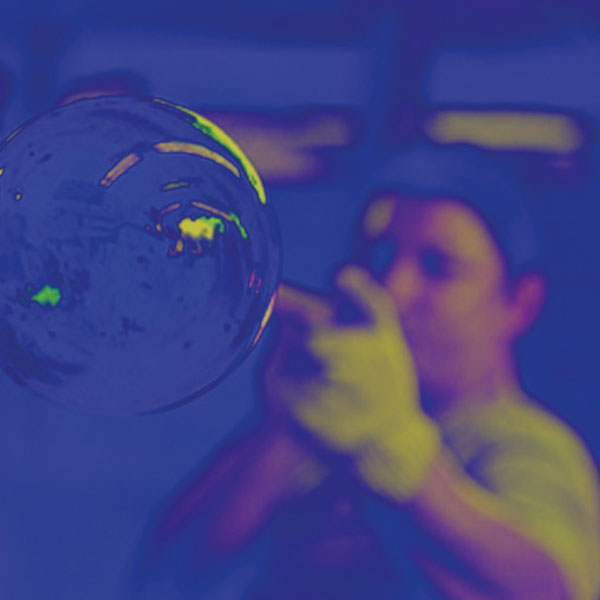

Técnicas
Vidrieria artesanal
Las técnicas artesanales con vidrio son diversas y pueden ser utilizadas para crear una amplia variedad de objetos, desde vidrieras hasta esculturas. Algunas de las técnicas más comunes incluyen el soplado, la colada, la fusión (tack fusing y full fusing), el grabado, el pulido, la pintura al horno, y la creación de vitrales o vidrio emplomado.
